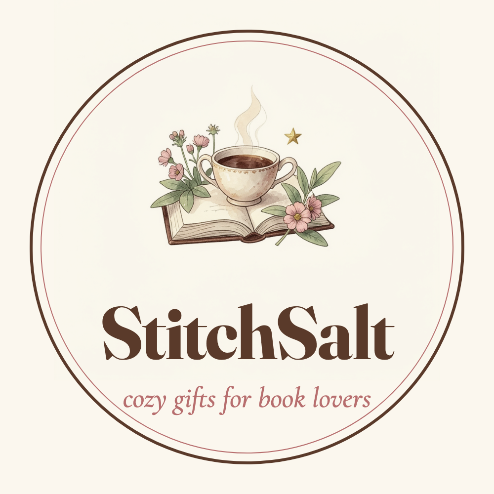

StitchSalt
Cozy illustrated gifts for book lovers
StitchSalt is a small independent shop of watercolor-illustrated gifts for readers: mugs, tote bags, art prints, puzzles, blankets, ornaments and cozy apparel. Every item is printed on demand by our production partners and sold through our Etsy shop.
Visit the StitchSalt shop on Etsy →
We also share our products on Pinterest and TikTok. Our internal tools only publish StitchSalt's own product images and videos to StitchSalt's own accounts.